Pro 9. ročník: čeští i světoví autoři, jejich díla a literární směry.
1920s avantgarda a poetismus1930s ohrožení demokracie1940s válka a odboj1950s cenzura a exil1960s uvolnění, nová vlna1970–80s samizdat a exilpo 1989 svobodné vydávání
🏛️ Oficiální literatura
prošla cenzurou, vyšla v nakladatelství
Za komunismu mohlo vyjít jen to, co prošlo cenzurou.
V 50. letech byl navíc předepsaný socialistický realismus.
📄 Samizdat
opisováno na stroji, šířeno potají
Zakázaní autoři vydávali doma a načerno — v pár desítkách
průklepových kopií. Slovo znamená „vydávám si sám“.
✈️ Exilová literatura
vydáváno v zahraničí (Toronto, Kolín)
Autoři, kteří emigrovali nebo doma vyjít nesměli. Knihy se
pak pašovaly zpátky do Československa.
Tváře autorů
Dobové fotografie spisovatelů z úloh. Po správné odpovědi se portrét autora objeví i v kartičce s vysvětlením.
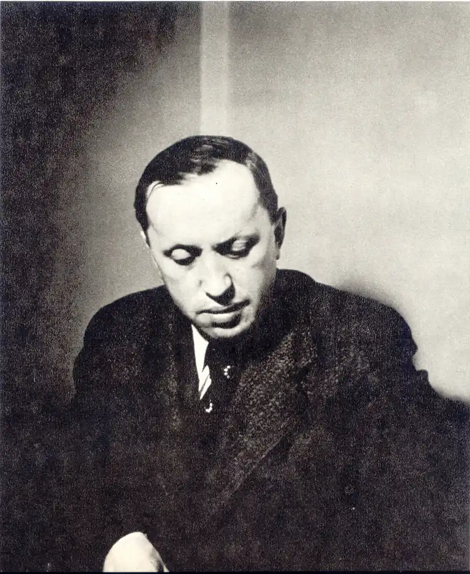
Karel ČapekR. U. R., Válka s Mloky. Varoval před zneužitím techniky a před totalitou; slovo robot vymyslel jeho bratr Josef.
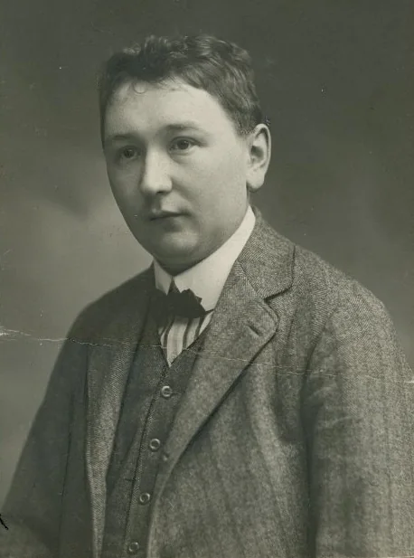
Jaroslav HašekOsudy dobrého vojáka Švejka. Satirou zesměšnil rakouskou armádu a válečnou mašinerii.
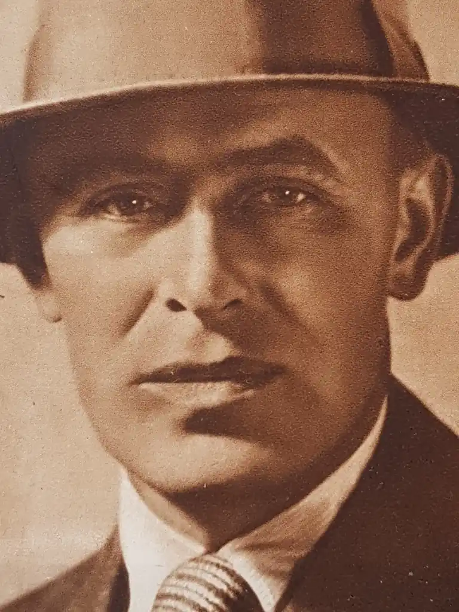
Vladislav VančuraRozmarné léto, Markéta Lazarová. Mistr bohatého, hravého jazyka; za odboj ho nacisté popravili roku 1942.
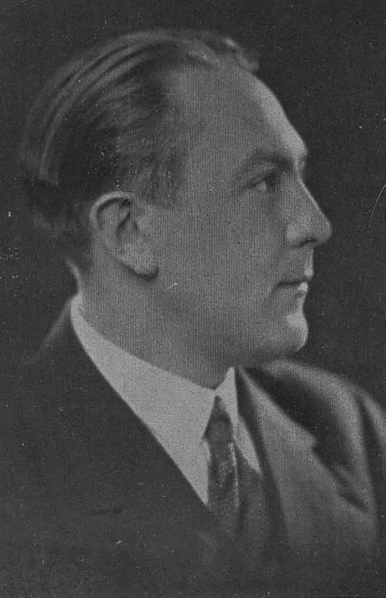
Vítězslav NezvalEdison. Hlavní básník poetismu a později surrealismu.
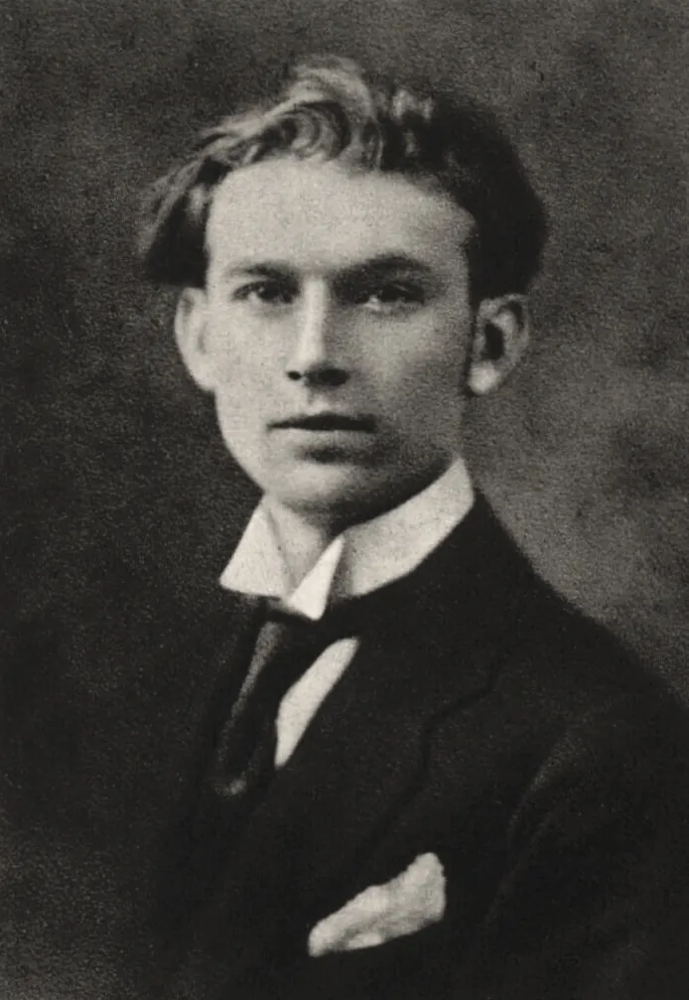
Jiří WolkerTěžká hodina. Sociálně laděná poezie; zemřel ve 24 letech na tuberkulózu.
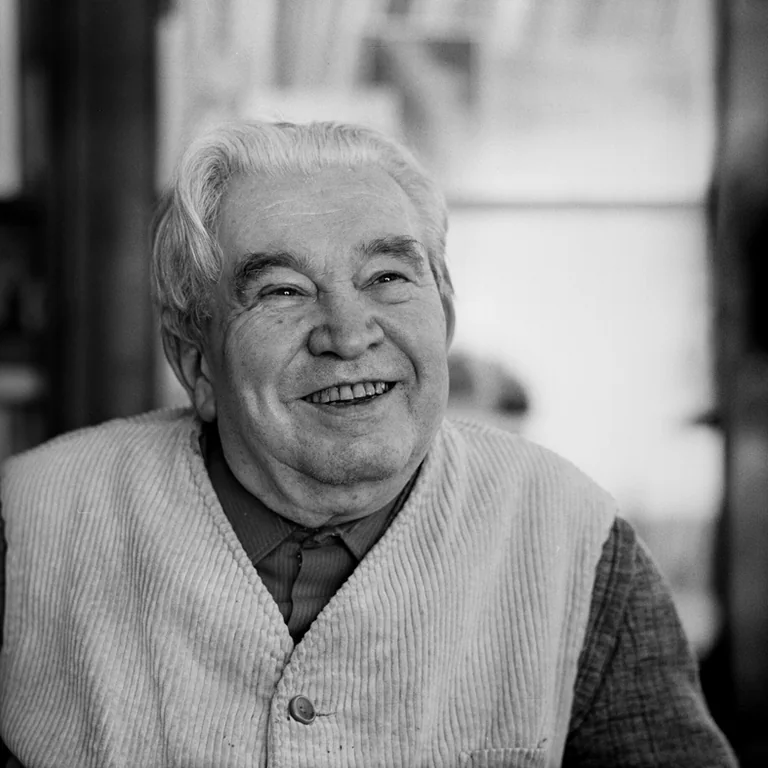
Jaroslav SeifertMaminka. Básník od poetismu po vzpomínkovou lyriku, jediný český nositel Nobelovy ceny za literaturu (1984).
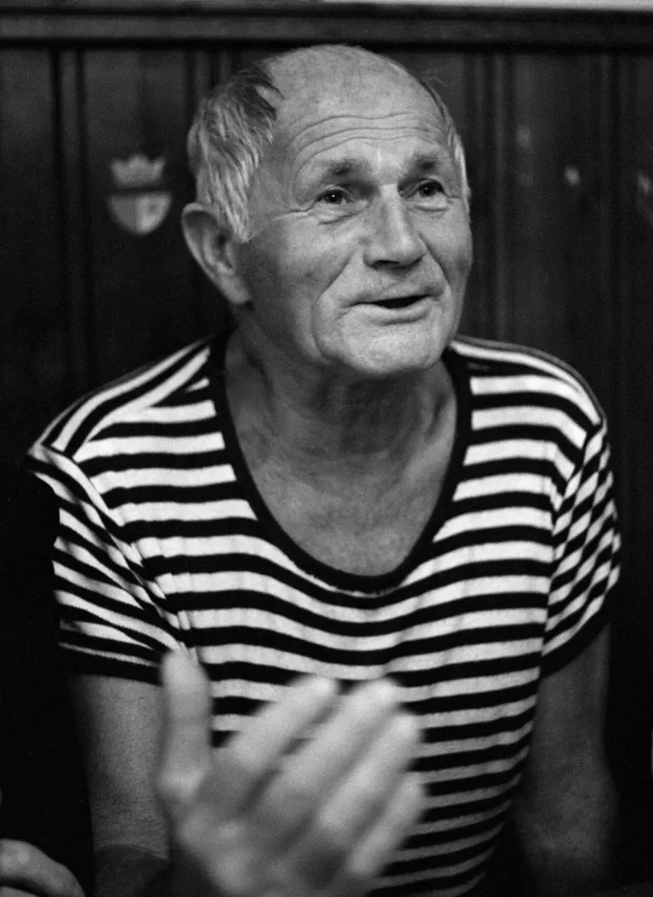
Bohumil HrabalOstře sledované vlaky. Vypravěč „pábitelů“ a dlouhých souvětí; část díla vyšla jen v samizdatu a exilu.
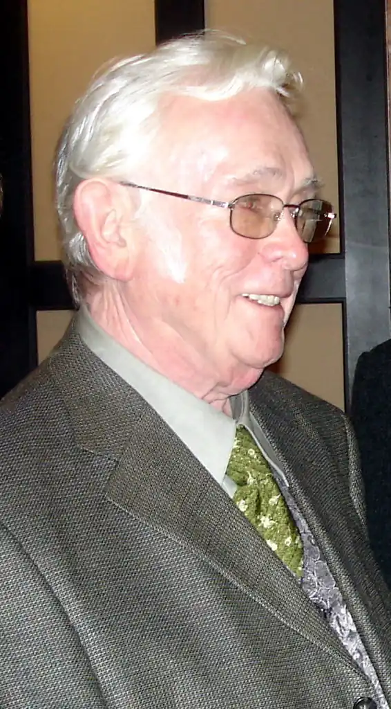
Josef ŠkvoreckýZbabělci. Po roce 1968 emigroval do Kanady a v Torontu vedl exilové nakladatelství 68 Publishers.Milan KunderaŽert. Od roku 1975 žil ve Francii; jeho romány doma nesměly vycházet.
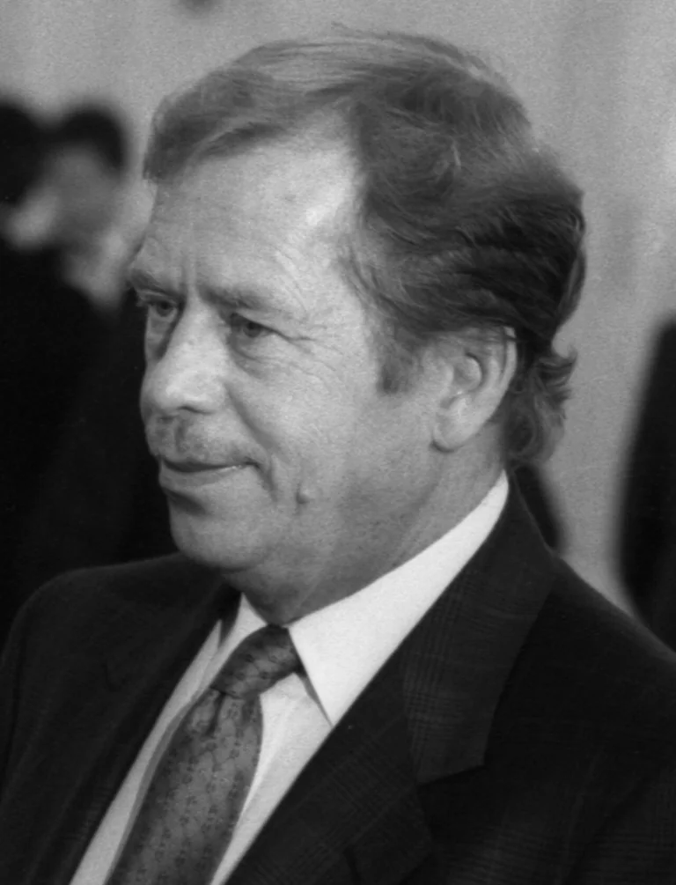
Václav HavelAudience. Autor absurdních her, mluvčí Charty 77, po roce 1989 prezident.
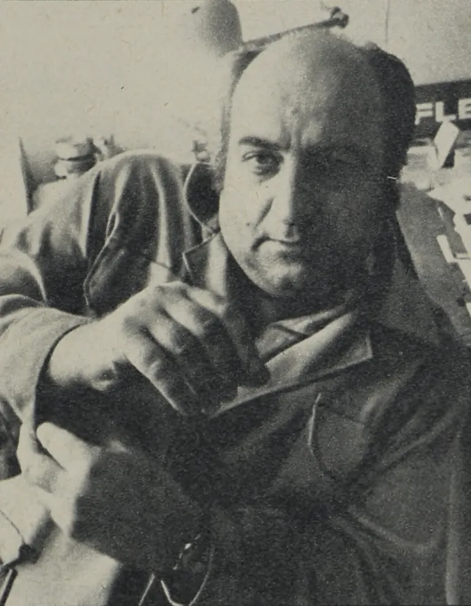
Ota PavelSmrt krásných srnců. Povídky o tátovi, rybaření a válce; původně sportovní novinář.
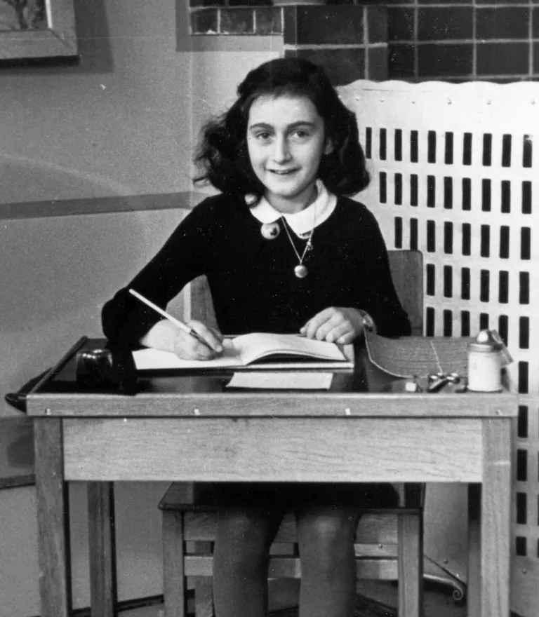
Anne FrankováDeník Anne Frankové. Psala ho v úkrytu v Amsterdamu; zahynula v koncentračním táboře Bergen-Belsen.
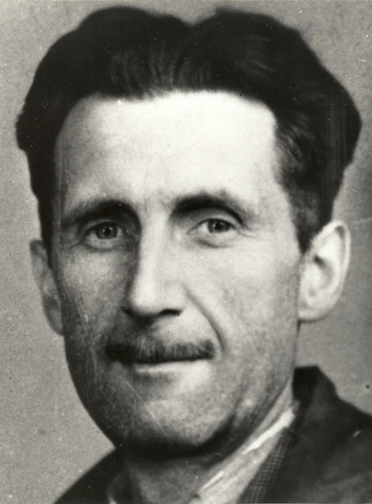
George Orwell1984. Román o totalitním státu, který sleduje a přepisuje dějiny.
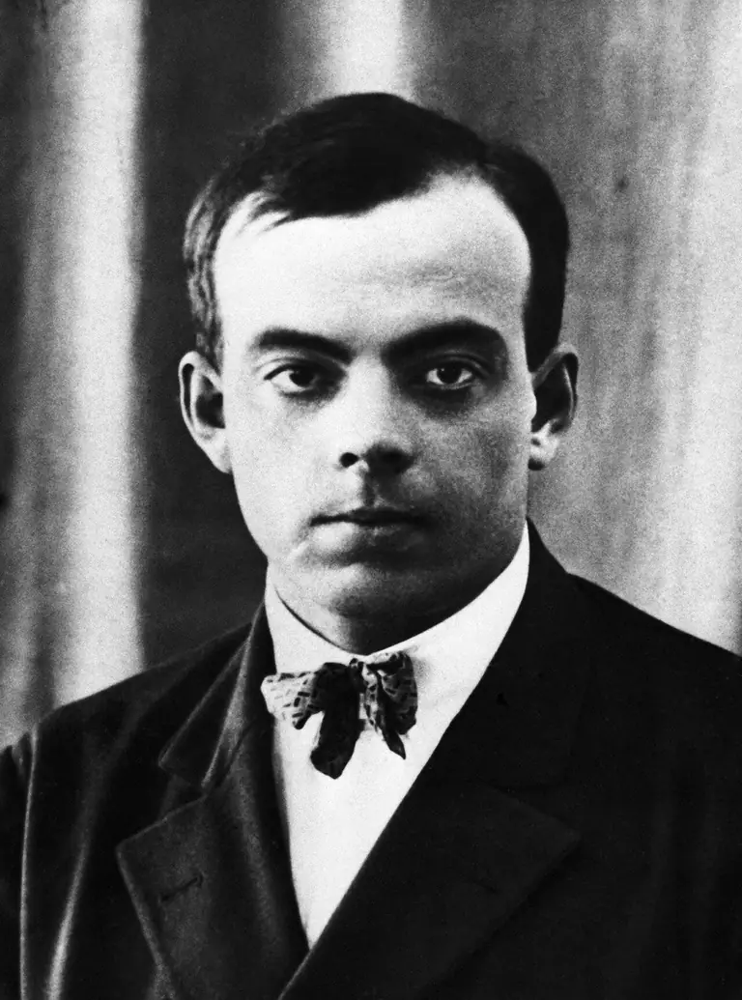
Antoine de Saint-ExupéryMalý princ. Pilot a spisovatel; z průzkumného letu roku 1944 se nevrátil.
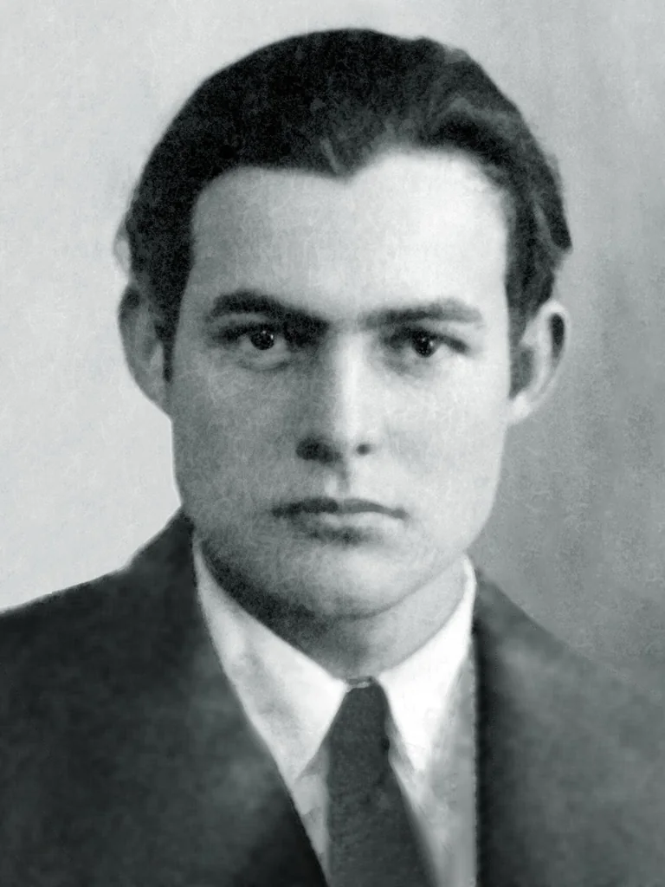
Ernest HemingwayStařec a moře. Úsporný styl krátkých vět; Nobelova cena 1954.
Literatura 20. století reaguje na obě světové války, na nesvobodu i na naději.
Kdy dílo vzniklo, se dá odhadnout z tématu: zákopy a Švejk → po první válce,
roboti a mloci → 30. léta, ukrývání a transporty → 40. léta, procesy a prověrky → 50. léta.
Klávesy: H nápověda · Enter další.